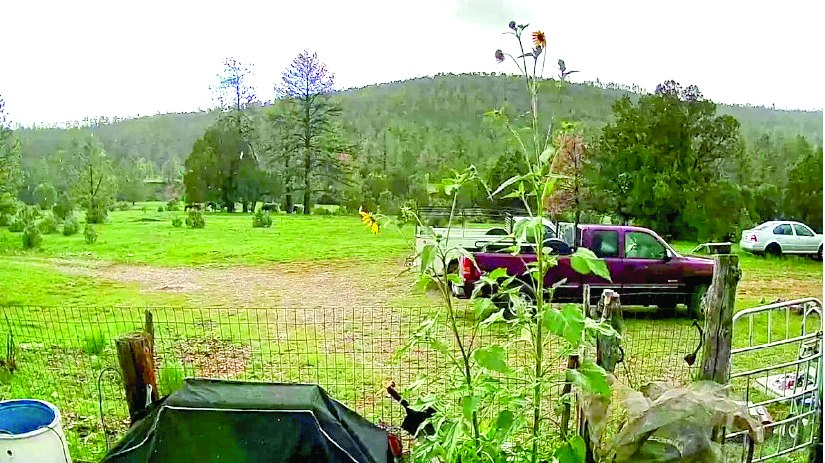
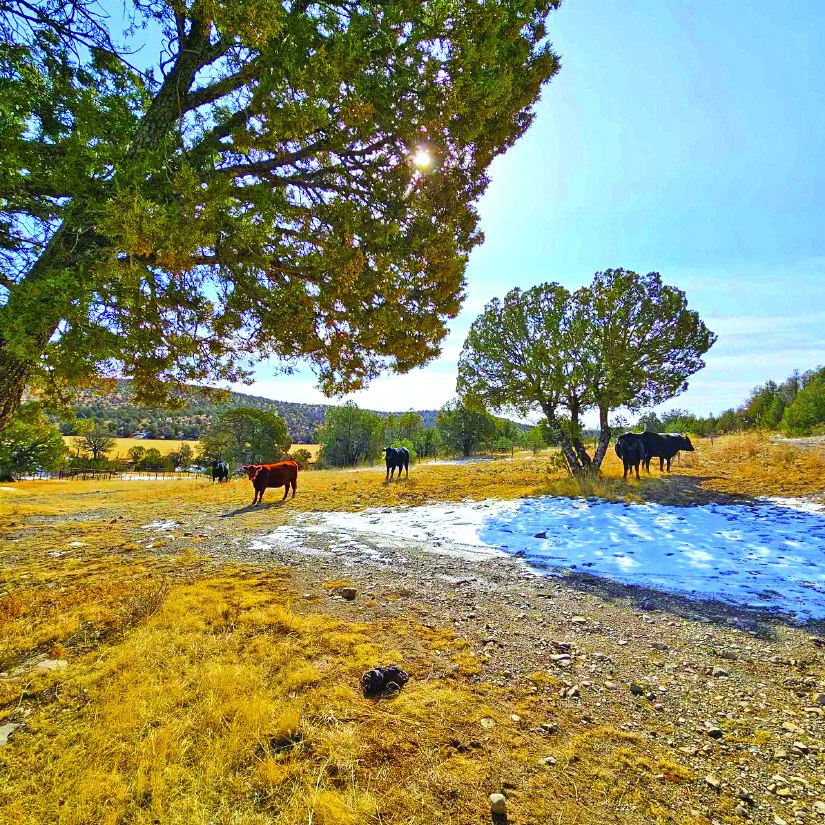
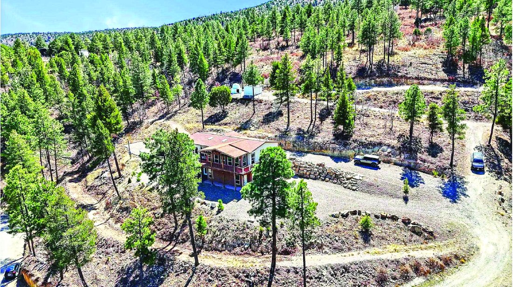
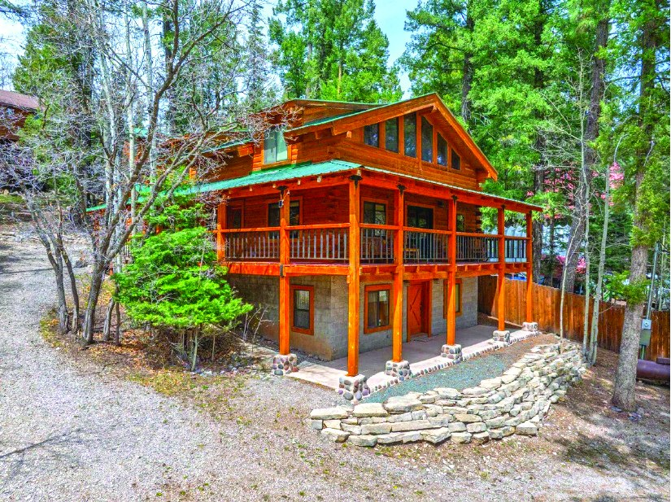
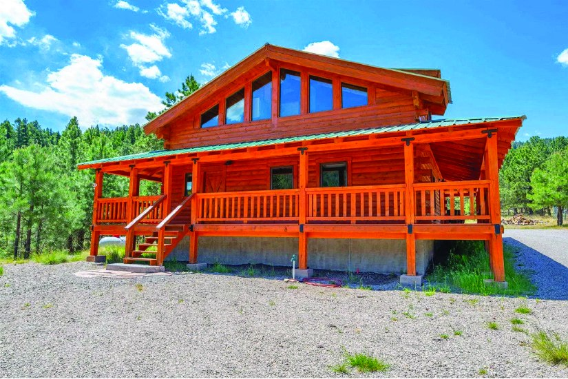

$550,000 3 Bedroom 27.261 Acre Property in Weed 3 bd · 1 ba · 27.261 acres Weed, New Mexico MLS #172060
80.0 Acre Property in Weed
$899,000
| Price | $899,000 |
|---|---|
| Land | 80.0 acres |
| Area | Weed, New Mexico |
| MLS # | 173244 |
| Listed by | Aspen Trails Realty |
| Print edition | October 2026 Otero County Edition, page 3 |
About this property
Extremely Rare Offering on Miller Flats Rd in Weed, NM. 80 acres of pristine, unrestricted land which has 880 feet of National Forest bordering to the west. Half the land is grazing flats with the other half being gentle hills with Juniper, Pinon, Cedar, and some Ponderosa Pines. 6800 to 7000 elevation. The property is easily accessible with the Agua Chiquita flowing through during wetter years. There is a good solar well on the property along with working pens and a barn. The 80 acres is also fully fenced and has potential for elk tag or two. This property has the potential to be everything you want it to be.
Interested in this property?
Office phone: 575-682-7778
Aspen Trails Realty
Please contact the listing agent or company directly. The Real Estate Roundup is a publisher and does not show or sell properties.
Listing details and photo reproduced from the October 2026 print edition of The Real Estate Roundup (page 3), as printed. Prices and availability can change after publication — confirm with the listing agent.
More Homes

$899,000 33 Joy Rd 3.4 acres MLS #172326 $925,000
80 Mamaw St.
4 bd · 2.5 ba · 6.0 acres
MLS #173172
$925,000
80 Mamaw St.
4 bd · 2.5 ba · 6.0 acres
MLS #173172

$869,900 2 Bedroom Property in Cloudcroft 2 bd · 0.5 ba Cloudcroft, New Mexico MLS #172431 $955,000
61 Haynes Canyon Rd High Rolls Mtn Park
High Rolls, New Mexico
MLS #172656
$955,000
61 Haynes Canyon Rd High Rolls Mtn Park
High Rolls, New Mexico
MLS #172656

$789,000 3 Bedroom 1.66 Acre Property in Cloudcroft 3 bd · 2 ba · 1.66 acres Cloudcroft, New Mexico MLS #172629